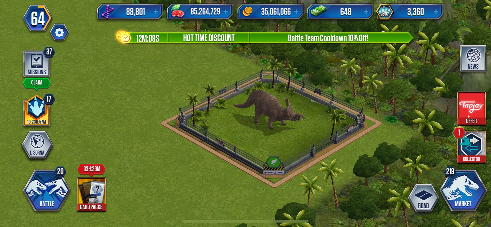
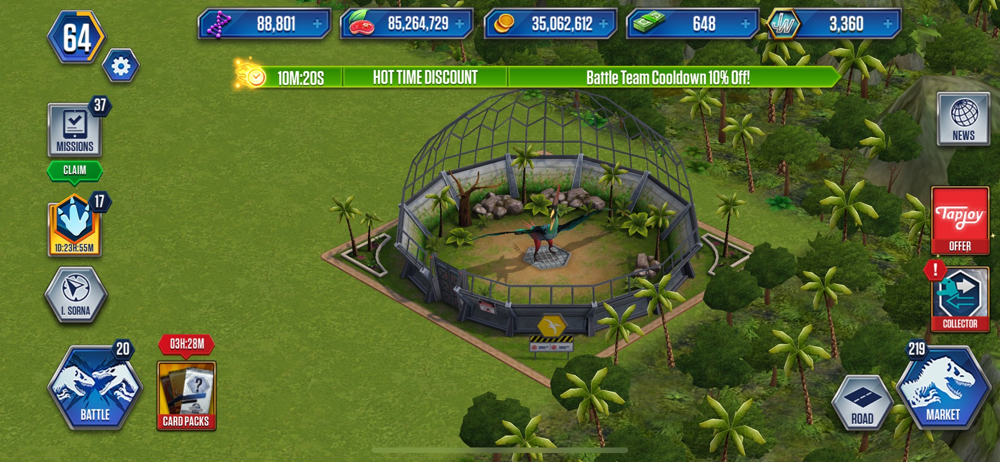
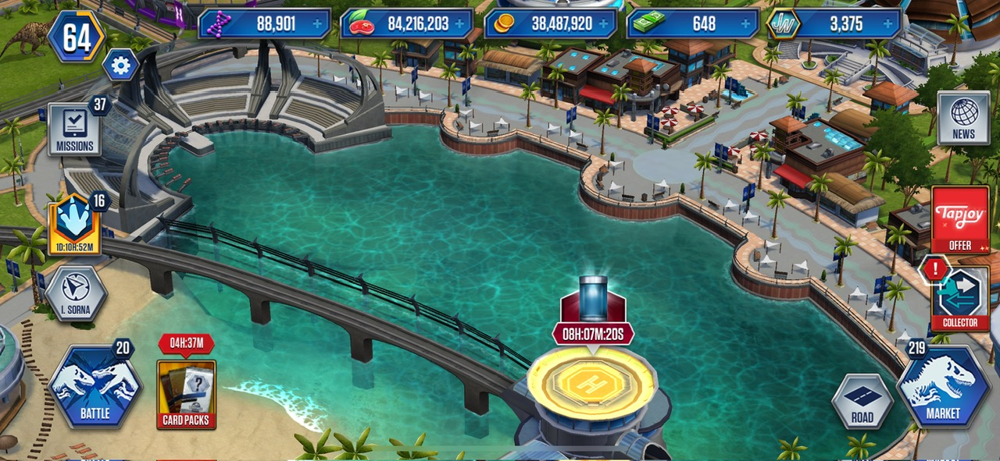

Cage is a area that contain you creatures, there are three main type of cages:
- Land cage
- Normal cage
- Hydrib cage
- VIP cage
- Carnivore cage
- Herbivore cage 
- Amphibian cage
- Pterosaur cage 
- Aquatic cage
- Cave biome
- Surface
- Reef biome
- Cerazonic cage
- Cavern
- Snow
- Savannah
Land cage are the most popular cage in the game, you will unlock the first land cage when you entered the game. The cage are automatically build when you hatched your dinosaur

This is your first cage, also your first dinosaur in the game.
Cage are also splited into 3 different types:


Note: Keep in mind that type of cage only show which kind of your creatures are, it doesn't have any special buff
There are four differents biome for four class of land creature:

Outside the cage
Isnide the cage
Outside the cage

Inside the cagee

Outside the cage

Inside the cage
Outside the cage

Inside the cage
Aquatic cage is basically a large pool that contain all the Aquatic creatures in it, it doesn't split into types like Land cage. Aquatic cage located in a large swimming pool which have a mosasaurus swimming around in it. Usually you can only access to aquatic cage at level 30, because at level 30 your battle stage will unlock and have a prize as a Prognathodon which is your first aquatic creature. However, if you somehow manage to unlock aquatic creature before level 30(through packs or participate in event), you are still allowed to access to aquatic cage.
Aquatic cage
Aquatic cage also have 3 differents biome for 3 class of aquatic creatures:


Just like the Aquaic cage, Cerazonic cage is basically a big blue green house that contain all the Cerazonic creatures in it.
Like the Aquatic cage, you can only access to it once you complete battle stage level 40 to earn your first Cerazonic creature isDeinotherium.
However, if you somehow to hatched a Cerazonic creature in the early stage without complete battle stage level 40(packs,events...).You are still allowed to access to Cerazonic cage.